Class 8 Assignment: Spatial Analysis & Geoprocessing
Spring 2026 | UENV 3200 - CRN 11009 + UURB 3210 - CRN 111008
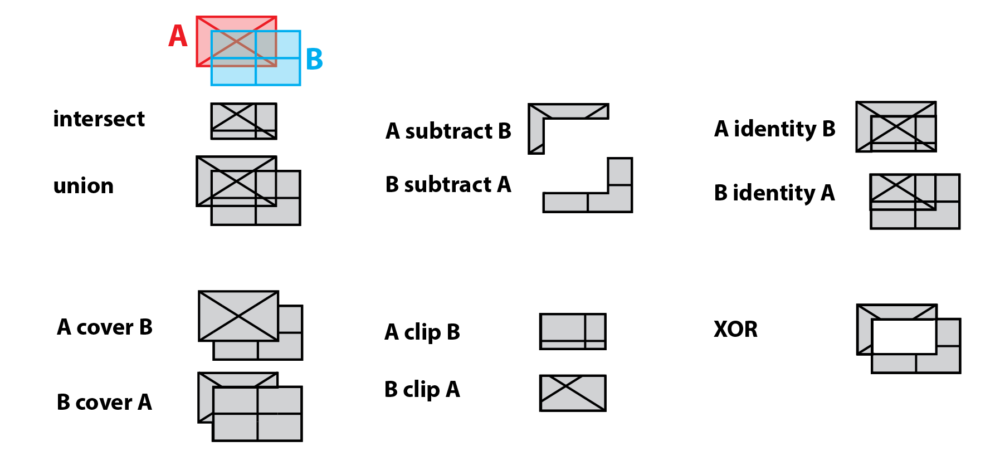
Preamble
Spatial analysis and more narrowly geoprocessing is a core component, capacity and function of GIS. Here the goal is to identify, manipulate, transform and operate both within and amongst spatial layers in order to solve spatial problems. Early in the assignment you will operate within single layers - known simply as single layer analysis. Here you will want to create proximity distances from a geographic feature that is deemed toxic, a danger to avoid via distance. Later in the assignment you will utilize overlay analysis between two layers of spatial data. Overlay analysis is operation(s) in GIS for superimposing multiple spatial layers representing different themes together for analyzing or identifying relationships between each of the layers. As discussed in the lecture, Boolean logic will be utilized throughout these analysis steps. In the overlay analysis steps, new spatial data sets will be created; in some instances, these new data sets will become the input for yet another step in the larger assignment methodology.
Once complete, this proximity-based spatial analysis will be combined with vulnerable populations (% Children via ACS Census data) for a final risk analysis.
This week’s assignment will draw on the primary concepts covered in Class 8 lecture & lab sessions:
- Geoprocessing - Proximity and Overlay
- Calculating Geometry
- Assigning Field Values and ranks
- Joining Tabular data to Feature Data
- Thematic Map Design for Hazard & Risk Ranking
In this eighth assignment, you will be utilizing input data representing environmental toxicity throughout NYC. We will also be using US Census ACS data contained in Public Use Microdata Areas (PUMAs). These geographies are larger than census tracts, smaller than counties. They adhere relatively well to NYC neighborhood boundaries and Community District boundaries; however, do note they are unique to the US Census.
A synopsis of the technical steps of the assignment listed as follows:
- Download and access necessary data for both administrative, census and environmental toxicity for NYC. These features will all be vector features in the same coordinate system for NYC - the state plane zone known as
NAD83 / New York Long Island (ftUS)by codeFIPS 3104,EPSG:2263with units inUS Foot. Any measurement in this week’s assignment will first be recorded in unitsUS Foot. - Create Proximity Buffers for toxicity features using different zone distances.
- Union and Dissolve these distances into one final layer of toxicity risk.
- Clip the newly created toxicity risk geographies to meaningful administration boundaries - the PUMAs; once complete each PUMA now has a portion of contamination that ‘starts and stops’ at the polygon edge of each respective PUMA.
- Once clipped, each PUMA will have a certain area calculation of toxicity risk; and some PUMAs could have no risk reported back as
NULL. - With area and % of PUMA calculations complete in a PUMA table, this tabular structure will be joined back to the original feature geometry for PUMAS.
- With a completed feature for PUMAS, an ordinal value will then be given for those PUMAS with % Children coupled with % Toxicity Risk.
- A final thematic map will be created that shows those PUMAS most at risk of environmental impact to a vulnerable population.
Class 8 Recorded Lecture (Titled Class 7 Lecture):
Before proceeding with assignment steps below, review the posted lecture slides + lecture recording for an overview of this week’s concepts and themes. Towards the end of the lecture, stop at the discussion of contamination risk in Kosovo. This section of the lecture pertains to another assignment which assesses ERW - Explosive Remanants of War - an ongoing phenomena in war-torn regions.
Class 8 Readings:
The Class 8 quiz which will open 03/30/26 will feature 10 questions covering Asthma and air pollution in the Bronx: methodological and data considerations in using GIS for environmental justice and health research - a hallmark research study that utilizes spatial analysis for risk within Bronx County, New York.
This study uses GIS to examine how environmental hazards—such as highways, industrial land uses, waste facilities, and power plants—are spatially related to high asthma rates in the South Bronx. By applying vector-based methods like buffering and overlay, the analysis identifies areas where multiple environmental exposures are concentrated. These exposure zones are then compared with demographic patterns, showing that vulnerable populations, especially children, are more likely to live in high-risk areas. The study demonstrates how GIS can reveal spatial patterns of environmental inequality and support environmental justice analysis.
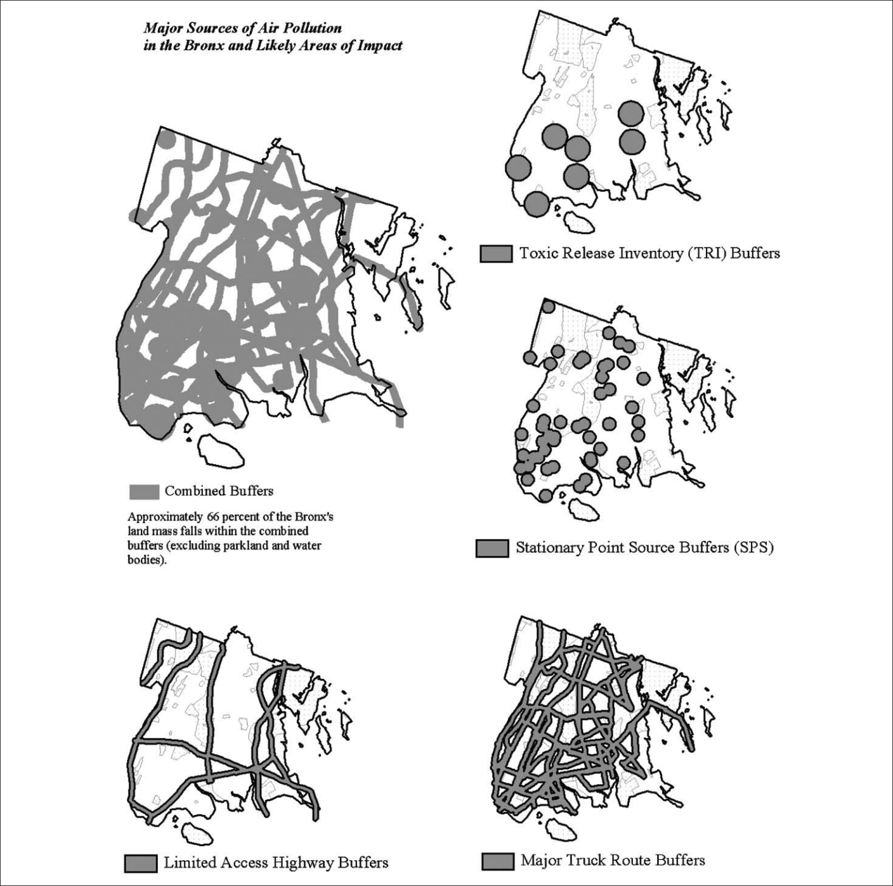
Assignment 8 Data Overview:
Location of Class 8 Prepared Data Directory
To begin the assignment, download the data directory and find the following spatial data resources therein:
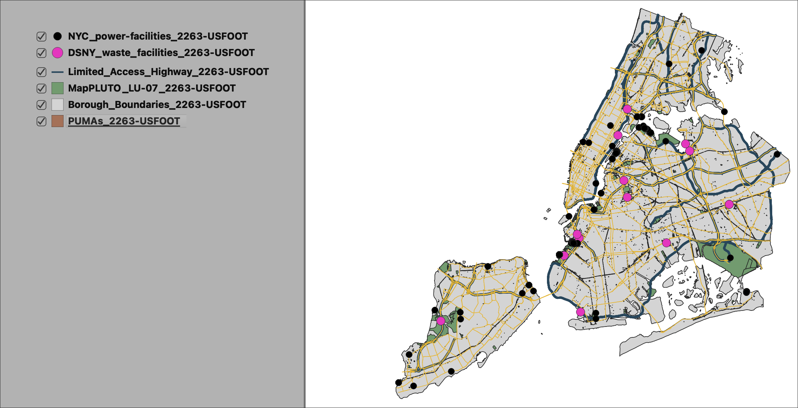
📦 Data Sources Overview
| Theme | Dataset Name | Source | Geometry | Key Attribute(s) | Role in Analysis |
|---|---|---|---|---|---|
| ⚡ Power Facilities | OSM Power Infrastructure (via Overpass) | OpenStreetMap / Overpass Turbo (informed by EIA context) | Point | power, plant:source (if available) |
Represents stationary energy generation sites contributing to localized environmental exposure |
| ♻️ Waste Facilities | Solid Waste Management Facilities | NYC Department of Sanitation (DSNY) / NYC Open Data | Point | Facility type, operator | Represents waste handling and transfer sites associated with truck traffic and localized pollution |
| 🚧 Limited Access Highways | LION Street Centerline (filtered RW_TYPE = 2) |
NYC Department of City Planning (DCP) | Line | RW_TYPE, NonPed |
Represents high-volume regional traffic corridors and continuous pollution exposure |
| 🏭 Industrial Land Use | PLUTO Land Use (filtered LandUse = 07) |
NYC Department of City Planning (DCP) | Polygon | LandUse |
Represents industrial zoning areas associated with environmental burdens |
| 👶 Population Vulnerability (PUMAs) | ACS 2022 5-Year Estimates (PUMAs) | U.S. Census Bureau (ACS) | Polygon | % Children (under 18) | Represents socially vulnerable populations used to assess exposure overlap |
Note the local, projected coordinate system (EPSG:2263 - NAD83 / New York Long Island (ftUS)) and its unit of measurement that will be used throughout the assignment. It is critical that all features used in the geoprocessing framework partake of the same coordinate system to avoid any processing errors.
🗽 Part 1: Project Setup & Layer Preparation
Step A: Add the Required Layers
Add the prepared vector datasets from the assignment data folder into your QGIS project. Your working layers should include:
- Power Facilities
- Waste Facilities
- Limited Access Highways
- Industrial Land Use
- prepared PUMA demographic table containing % children from ACS 2022
Step B: Review Geometry Types
Before proceeding, confirm the geometry type for each layer: - Points: Power Facilities, Waste Facilities - Lines: Limited Access Highways - Polygons: Industrial Land Use, PUMAs
Step C: Create an Exports Folder
- Create a subfolder titled
exportsinside your assignment folder. - Save all newly created geoprocessing outputs into this folder as you progress through the assignment.
🌫️ Part 2: Create Environmental Hazard Buffers (Proximity Analysis)
Step A: Buffer Power Facilities
Use the Buffer tool to create a proximity zone around the Power Facilities layer. - Distance: 3,000 feet - Save the result as: power_buffer.shp
Step B: Buffer Waste Facilities
Use the Buffer tool to create a proximity zone around the Waste Facilities layer. - Distance: 2,000 feet - Save the result as: waste_buffer.shp
Step C: Buffer Limited Access Highways
Use the Buffer tool to create a proximity zone around the Truck Routes layer. - Distance: 800 feet - Save the result as: highway_buffer.shp
Step D: Buffer Industrial Land Use
Use the Buffer tool to create a proximity zone around the Industrial Land Use polygons. - Distance: 600 feet - Save the result as: industrial_buffer.shp
Step F: Check Your Buffer Results
- Turn each buffer layer on and off in the map canvas.
- Confirm that each output is a polygon feature layer.
- Make sure all buffers align correctly with the source data and that no layer appears misplaced due to CRS mismatch.
📏 Proximity Analysis Parameters
| Theme | Geometry | Proximity Distance (ft) | Conceptual Assumption |
|---|---|---|---|
| ⚡ Power Facilities | Point | 3,000 ft | Power plants act as stationary emission sources, with environmental impacts extending outward into surrounding areas; larger buffers reflect broader dispersion of pollutants. |
| ♻️ Waste Facilities | Point | 2,000 ft | Waste facilities generate localized environmental burdens (e.g., emissions, truck activity), with impacts concentrated near the site but affecting nearby neighborhoods. |
| 🚧 Limited Access Highways | Line | 800 ft | Traffic corridors concentrate diesel traffic and associated emissions, with exposure strongest near routes and decreasing with distance. |
| 🏭 Industrial Land Use | Polygon | 600 ft | Industrial zones represent clusters of potential environmental hazards, with impacts extending beyond parcel boundaries into adjacent areas. |
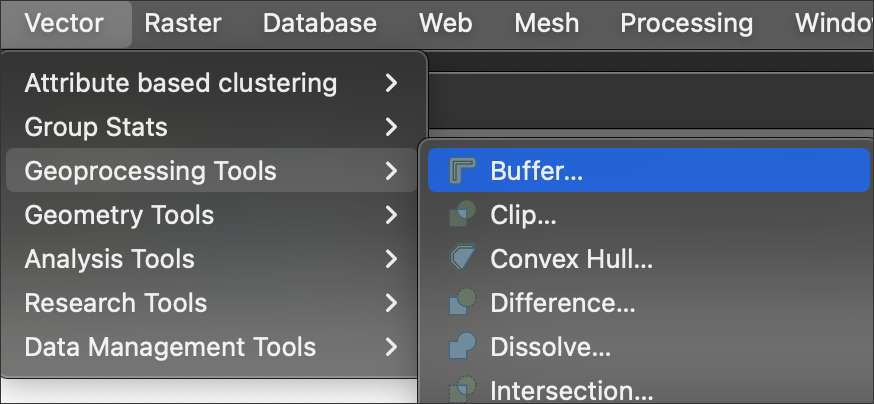
Make sure to insert a higher Segments value; recommended at least 30; this increased value ‘smooths’ the resulting polygon so that its very accurate and no significant generalization results in the buffer.
Batch Processing is allowed at the bottom of the parameters dialog box; this can speed up your processing but make sure all your parameter entries are sound and correct.
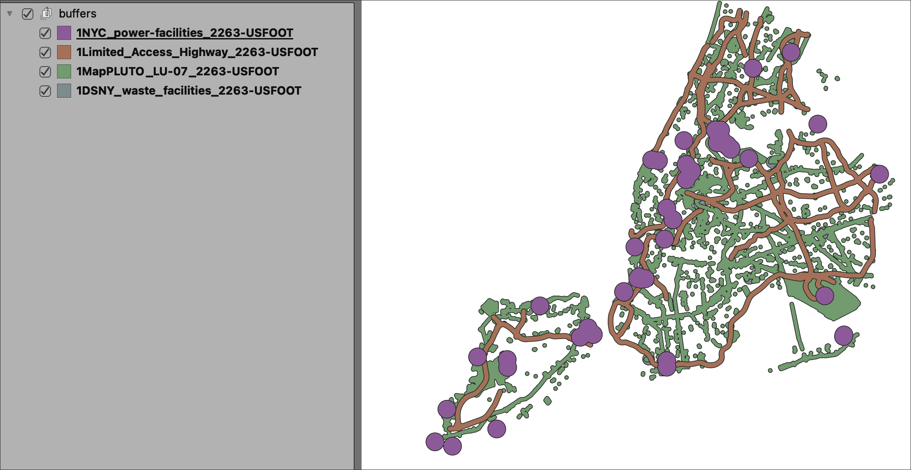
🧩 Part 3: Combine the Hazard Buffers into One Exposure Layer
Step A: Union the Buffer Layers
Use the Union tool to combine your buffered hazard layers into one multipart environmental exposure dataset.
You may do this in stages if needed:
- Union
power_bufferwithwaste_buffer - Union that result with
truck_buffer - Union that result with
industrial_buffer
- Save the final union result as:
hazard_union.shp
Vector Overlay > Union (Multiple) is a sound option by which you can easily union several layers at once to save time over the stages approach noted above.
Step B: Review the Union Output
- Open the attribute table of the union result.
- Confirm that the new layer contains many features and inherited attributes from multiple hazard sources.
- This layer represents all environmental hazard buffers before simplification.
Step C: Create a Dissolve Field
To prepare for dissolve, add a new integer field to the union layer: - Field name: dissolve_c - Type: Integer - Set every record value to: 1
Step D: Dissolve the Union Result
Use the Dissolve tool to dissolve all unioned polygons into one final environmental exposure area. - Dissolve based on the dissolve_c field - Save the result as: hazard_dissolve.shp
Step E: Validate the Dissolve
- Open the attribute table of the dissolved layer.
- Confirm that the dissolve has reduced the union result to one merged environmental exposure layer.
- This final dissolved layer will serve as the main exposure zone for the remaining workflow.
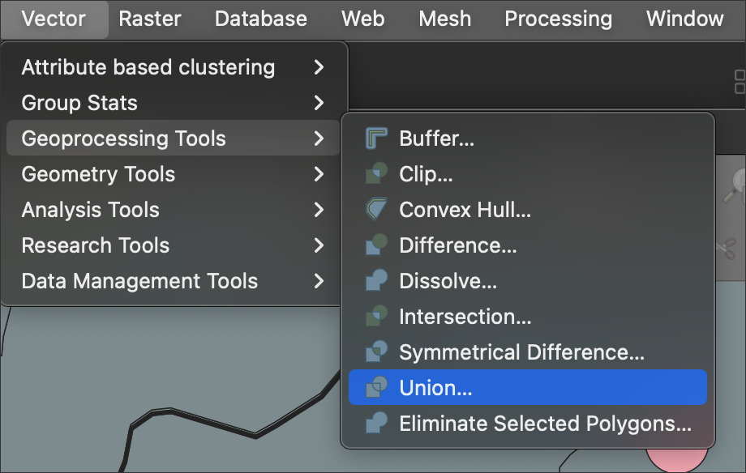
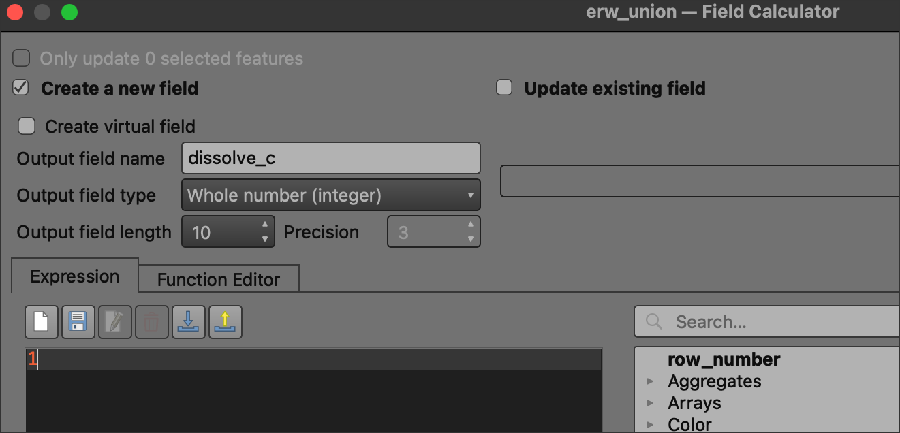
dissolve_c new fieldNext, search within the Processing Toolbox for Vector geometry > Dissolve. In the parameters, make sure to add the new field dissolve_c as the Dissolve field(s).
When complete the dissolve process should result in one polygon feature representing all the hazard inputs. Make sure this is also just ONE (1) record in the attribute table; the exact fields data doesn’t matter, but it must be dissolved to just one feature/record before proceeding to the next section in the analysis.
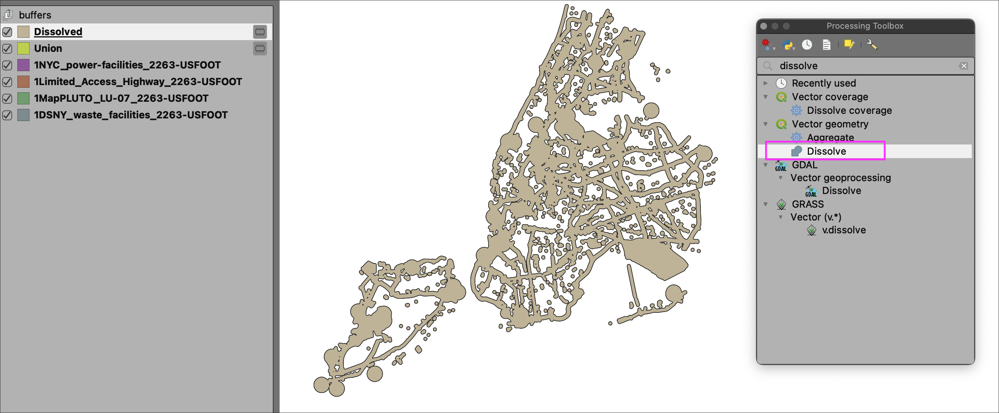
✂️ Part 4: Intersect Exposure Areas with PUMAs
Step A: Prepare the PUMA Layer
- Use the NYC PUMAs layer as the main geographic unit for this analysis.
- Each PUMA will serve as a unit for measuring environmental exposure and storing the vulnerability variable % children.
Step B: Fix Geometry if Needed
If QGIS reports invalid geometry in either the PUMA or dissolved hazard layer:
- Use Fix Geometries
- Save repaired outputs as needed, such as:
pumas_fixed.shphazard_dissolve_fixed.shp
Step C: Intersect Exposure Areas with PUMAs
Use the Intersect tool to combine:
- the dissolved hazard exposure layer
- the PUMA layer
Save the result as: - hazard_puma_intersect.shp
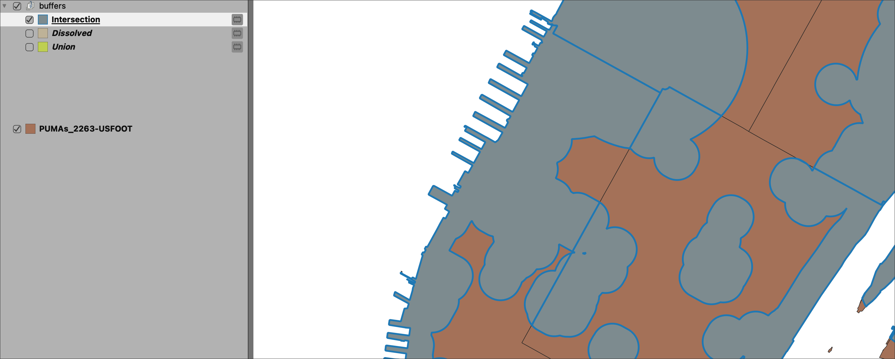
Note that the Intersection result (grey with blue outline in the diagram) is composed of original dissolved hazard geography, but now with ‘breaks’ along the PUMA boundaries. In other words, through intersection we have ‘cut’ the hazard dissolve along the PUMA boundaries so that we can calculate % of hazard within each unique PUMA boundary.
Step D: Review the Intersect Output
- Open the map canvas and compare the intersect result to the dissolved hazard layer.
- Each feature should now represent the portion of hazard exposure located inside a specific PUMA.
📐 Part 5: Calculate Exposure Area by PUMA
Step A: Add Geometry Information to the Intersect Layer
Use Add Geometry Attributes for hazard_puma_intersect.
- This field will represent the area of environmental exposure inside each PUMA.
- In the attribute table, look for the new field
area_2; note that this measurement is square feet assuming we have chosen to calculate area based on the layer CRS.
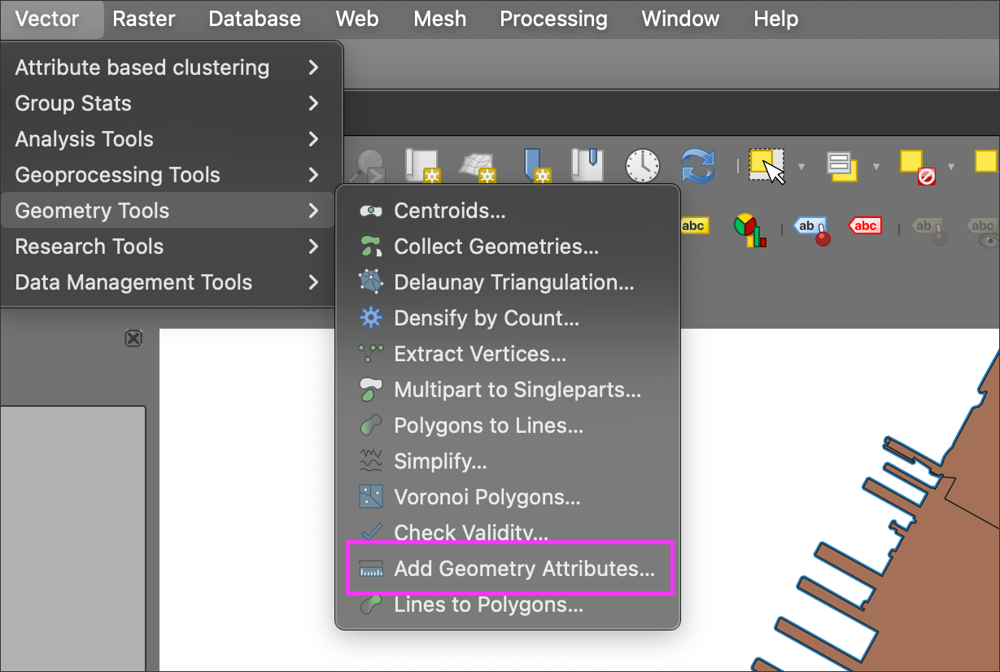
Step B: Confirm the Exposure Area Field
- Open the attribute table and confirm that an area field (
area_2) now exists for the intersected polygons. - Rename the field so that it will be differentiated from the PUMA total area. Here we will rename as
haz_area.
Step C: Drop Fields and Save
Open the attribute table and note that the following fields are the only fields necessary for further analysis:
haz_areaGEOIDFQ20use Drop Fields to drop all fields except the two noted above. Run as Temporary Layer.
Run Drop Fields cautiously; however, its important to remove fields that are irrelevant to the analysis purpose. This will ensure that the forthcoming table join will be clean and successful.
Step C: Calculate Total PUMA Area
- Switch active layer to the original PUMA layer.
- Repeat the same process Add Geometry Attributes using the layer CRS.
- Keep the same field name
area; this is the total area of each PUMA on a square footage basis.
Step D: Join Total PUMA Area into the Intersect Layer
Start with the PUMA layer with the new
areafield attribute. Conduct a table join with the Temporary Layer that houses both -haz_area+GEOIDFQ20, and all other fields removed.Utilize the
GEOIDFQ20field as the unique join ID. In the results, we need at least the following:A PUMA Unique ID and/or name
exposure area within the PUMA (square feet)
total PUMA area (square feet)
Save this table join as:
hazard_puma.shp
📊 Part 6: Calculate Percent Exposure by PUMA (Normalization)
Step A: Create a New Percent Exposure Field
Open the attribute table for the summarized PUMA exposure layer and add a new decimal field:
- Field name:
pct_expos(percent exposure)
Step B: Calculate Percent Exposure
Use the Field Calculator with an expression such as:
("haz_area" / "puma_area") * 100
Use the actual field names present in your table.
Use the actual field names present in your table that represent the dissolved hazard area and the total PUMA area. The logic remains the same regardless the name: the hazard area is the nominator and the total PUMA area is the denominator.
Step C: Review the Results
- Sort the
pct_exposfield from highest to lowest. - Observe which PUMAs have the greatest share of land area demarcated as hazard exposure zones.
Step D: Interpret the Meaning
- This step normalizes exposure by total PUMA size, making comparison more meaningful than raw area alone.
- Once normalized, we can see a distinct pattern of hazard exposure concentration across NYC PUMAs.
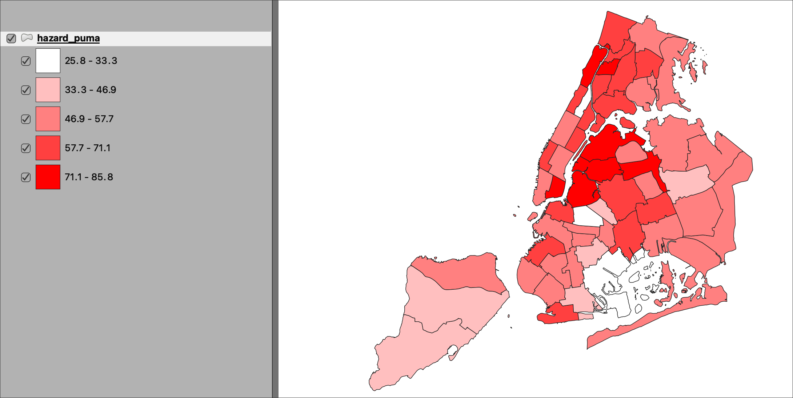
- We can also map the vulnerability
pct_youthto quickly compare the spatial pattern against the hazard exposure.
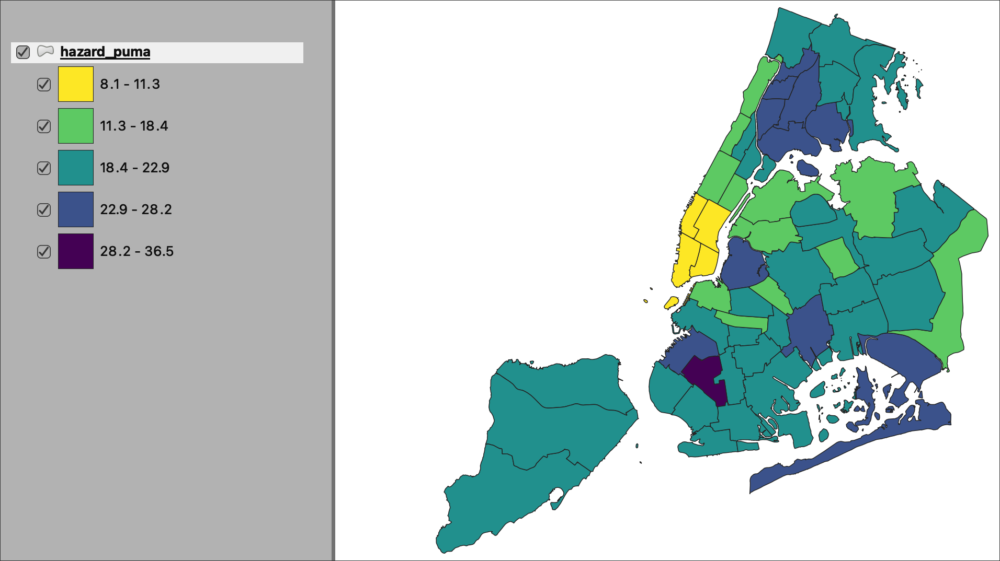
🏭⚠️ + 👶 Part 7: Normalize Hazard and Youth Variables
Step A: Review Input Fields
Your dataset should now include:
pct_expos→ percent environmental hazard exposure
pct_youth→ percent youth population
These variables are measured on different scales and must be normalized before combining.
🔄 Conceptual Model: Normalization → Combination → Mapping
pct_expos ──────────────┐
├──► normalize to 0–1 ───► haz_norm ───┐
pct_expos ──────────────┘ │
├──► average both ───► risk_score ───► graduated thematic map
pct_youth ──────────────┐ │
├──► normalize to 0–1 ───► youth_norm ─┘
pct_youth ──────────────┘Step B: Create Normalized Hazard Field
Add a new decimal field:
- Field name:
haz_norm - Utilize the Field Calculator to calculate the first Min-Max Normalization using the following equation:
("pct_expos" - minimum("pct_expos")) / (maximum("pct_expos") - minimum("pct_expos"))
Step C: Create Normalized Youth Field
Add a new decimal field:
Field name:
youth_normUtilize the Field Calculator to calculate the first Min-Max Normalization using the following equation:
("pct_youth" - minimum("pct_youth")) / (maximum("pct_youth") - minimum("pct_youth"))
Step D: Confirm Normalization
- Values for both
haz_normandyouth_normshould now range between 0 and 1 - 0 = lowest observed value
- 1 = highest observed value
🧮 Part 8: Create Combined Risk Score
Step A: Conceptual Model Overview
The combined risk score represents the overlap between:
- environmental burden (
pct_expos) - population vulnerability (
pct_youth)
Both variables are first normalized and then averaged.
Step B: Create Risk Score Field
Add a new decimal field:
Field name:
risk_scoreUtilize the Field Calculator to calculate the Risk Score using the following equation:
("haz_norm" + "youth_norm") / 2
Step C: Review Results
- Sort the resulting
risk_scorefrom highest to lowest
- Identify PUMAs with the greatest combined environmental and demographic vulnerability
🏷️ Part 9: Classify Final Risk (for Mapping Only)
Step A: Apply Graduated Symbology
- Open Layer Properties → Symbology
- Choose Graduated
Field:
risk_score
Step B: Choose Classification Method
Recommended: - Quantile (Equal Count) OR - Natural Breaks (Jenks)
Number of classes:
- 3 or 5
Suggested label Structure:
- Low Risk
- Moderate Risk
- High Risk
Step C: Apply Color Ramp
Use a sequential ramp:
- light → dark
- or yellow → orange → red
Step D: Interpret the Pattern
As you view the map, consider:
- where high hazard and high youth populations overlap
- which PUMAs stand out as highest risk
- whether patterns cluster geographically
🗺️ Part 10: Final Thematic Map
Step A: Create Map Layout
Include:
- title
- legend
- scale bar
- north arrow
- data sources
- your name and course
Step B: Emphasize Key Layers
Your final map should clearly show:
- PUMA boundaries
- graduated
risk_score
- visual hierarchy prioritizing high-risk areas
Step C: Export Map
Export as:
- PDF
- PNG
Suggested filename:
lastname_assignment8_combined_risk_map.pdf
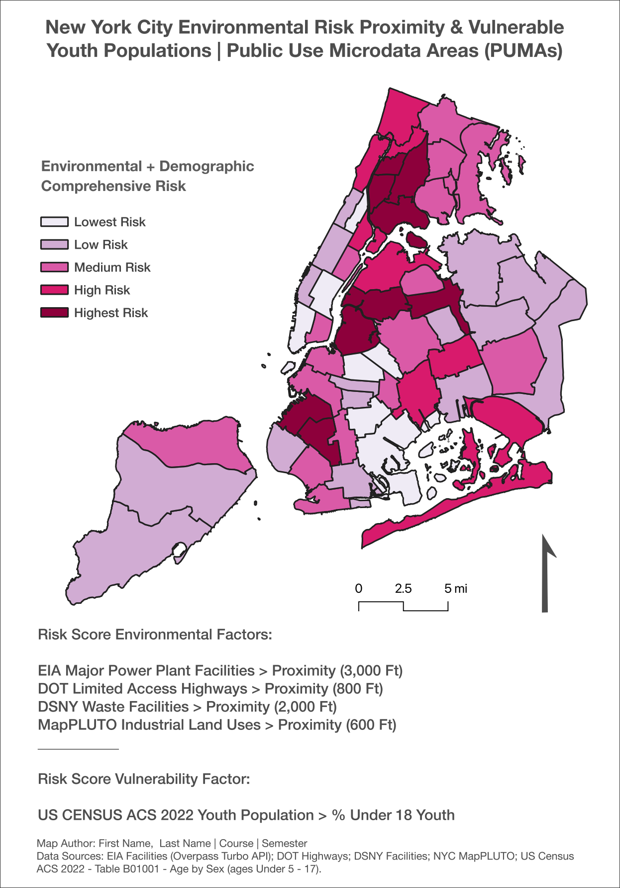
📝 Part 11: Interpretation Prompts
Step A: Review Method
- hazard and youth variables were normalized
- combined into a continuous risk score
Step B: Interpret Results
- Which PUMAs have the highest risk scores?
- Do high-risk areas cluster spatially?
- How does the combined score differ from hazard alone?
Step C: Reflect on Limitations
- normalization is relative to the dataset
- equal weighting assumes both variables are equally important
- proximity does not measure actual pollutant levels
Step D: Environmental Justice Connection
Reflect on how the combined risk surface highlights areas where:
- environmental burdens concentrate
- vulnerable populations reside